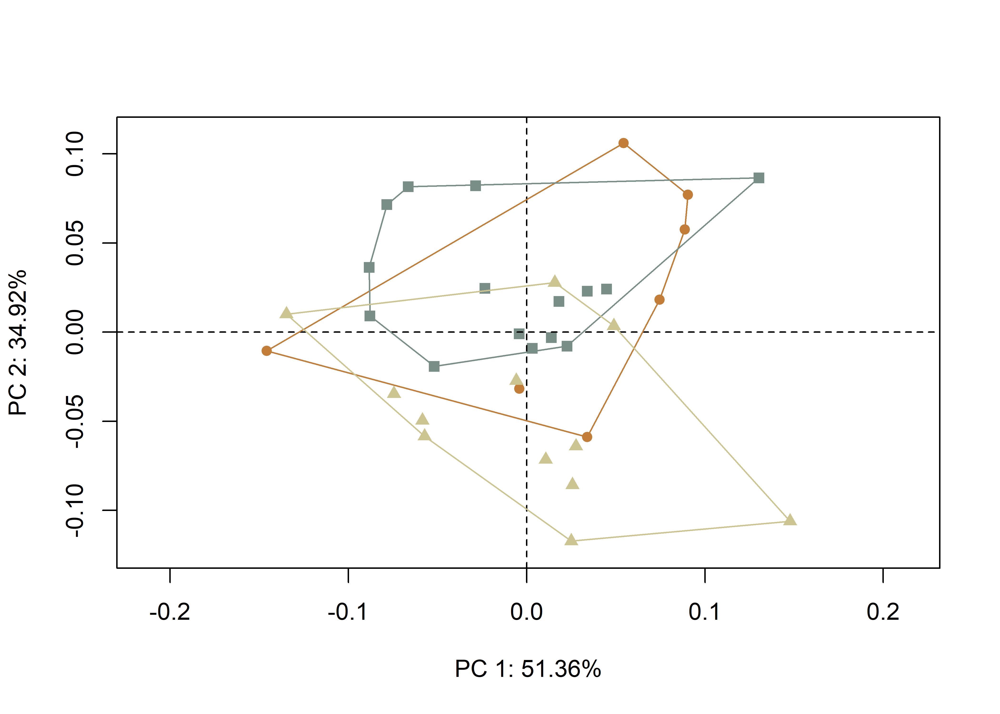
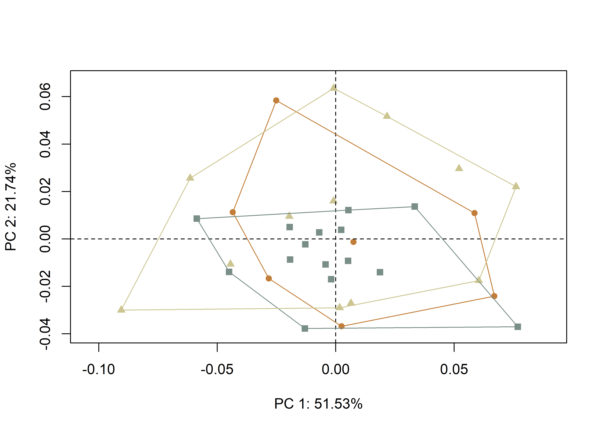

Chapter 3 Symmetry and asymmetry
In studies of projectile morphology, an analysis of bilateral/object symmetry may yield useful insights related to design intent, provided we assume that the goal of the knapper was to achieve a fully-symmetrical form. Within that framework, deviation from bilateral symmetry (fluctuating asymmetry) might serve as a useful measure of knapper skill and/or differential production. Both measures have utility in comparisons of contexts and sites, to include wide-ranging spatial and temporal applications. Initially developed for a symmetry analysis of Gahagan bifaces, the same approach can be employed for an analysis of asymmetry in Perdiz arrow points.
3.1 Load packages + data
# load analysis packages
library(here)
library(geomorph)
library(tidyverse)
library(wesanderson)
# read shape data and define number of sLMs
shapes <- readShapes("shapes")
shapesGM <- readland.shapes(shapes, nCurvePts = c(10,3,5,5,3,10))
# read qualitative data
qdata <- read.csv("qdata.csv",
header = TRUE,
row.names = 1)
land.pairs <- read.csv("asymmetry1.csv",
header=TRUE)
ind <- qdata$spec.x3.2 Generalized Procrustes Analysis
# gpa for bilateral (object) asymmetry
res.bilat <- bilat.symmetry(shapesGM,
ind = ind,
object.sym = TRUE,
land.pairs = land.pairs,
RRPP = TRUE,
iter = 9999,
print.progress = FALSE)##
## Performing GPA
##
|
| | 0%
|
|========= | 10%
|
|================== | 20%
|
|========================== | 30%
|
|=================================== | 40%
|
|============================================ | 50%
|
|===================================================== | 60%
|
|============================================================== | 70%
|
|====================================================================== | 80%
|
|=============================================================================== | 90%
|
|========================================================================================| 100%
##
## Making projections... Finished!summary(res.bilat)##
## Call:
## bilat.symmetry(A = shapesGM, ind = ind, object.sym = TRUE, land.pairs = land.pairs,
## iter = 9999, RRPP = TRUE, print.progress = FALSE)
##
##
## Symmetry (data) type: Object
##
## Type I (Sequential) Sums of Squares and Cross-products
## Randomized Residual Permutation Procedure Used
## 10000 Permutations
##
## Shape ANOVA
## Df SS MS Rsq F Z Pr(>F)
## ind 33 0.60500 0.0183334 0.89307 11.915 11.6372 1e-04 ***
## side 1 0.02167 0.0216658 0.03198 14.081 3.4472 1e-04 ***
## ind:side 33 0.05077 0.0015386 0.07495
## Total 67 0.67744
## ---
## Signif. codes: 0 '***' 0.001 '**' 0.01 '*' 0.05 '.' 0.1 ' ' 13.2.1 Symmetric shape
# symmetric shape
symm.shape <- res.bilat$symm.shape[,1:2,]
## plot all specimens
plotAllSpecimens(symm.shape)(#fig:symm.shape)Symmetric shape component.
3.2.2 Asymmetric shape
# asymmetric shape
asymm.shape <- res.bilat$FA.component[,1:2,]
## plot all specimens
plotAllSpecimens(asymm.shape)(#fig:asymm.shape)Asymmetric shape component.
3.3 Principal Components Analysis (symmetric)
# geomorph data frame
gdf <- geomorph.data.frame(shape = res.bilat$symm.shape,
ashape = res.bilat$FA.component,
raw.mat = qdata$raw.mat)
# principal components analysis (symmetric)
pca.symm <- gm.prcomp(res.bilat$symm.shape)
summary(pca.symm)##
## Ordination type: Principal Component Analysis
## Centering by OLS mean
## Orthogonal projection of OLS residuals
## Number of observations: 34
## Number of vectors 28
##
## Importance of Components:
## Comp1 Comp2 Comp3 Comp4 Comp5
## Eigenvalues 0.004708168 0.003200768 0.0006599687 0.0002893971 0.0001294446
## Proportion of Variance 0.513616720 0.349173565 0.0719963576 0.0315705001 0.0141211812
## Cumulative Proportion 0.513616720 0.862790284 0.9347866418 0.9663571419 0.9804783230
## Comp6 Comp7 Comp8 Comp9 Comp10
## Eigenvalues 6.196014e-05 4.788305e-05 2.950307e-05 1.260255e-05 8.855230e-06
## Proportion of Variance 6.759267e-03 5.223589e-03 3.218506e-03 1.374820e-03 9.660221e-04
## Cumulative Proportion 9.872376e-01 9.924612e-01 9.956797e-01 9.970545e-01 9.980205e-01
## Comp11 Comp12 Comp13 Comp14 Comp15
## Eigenvalues 5.535405e-06 3.974561e-06 2.922251e-06 1.911615e-06 1.525591e-06
## Proportion of Variance 6.038605e-04 4.335871e-04 3.187900e-04 2.085392e-04 1.664276e-04
## Cumulative Proportion 9.986244e-01 9.990580e-01 9.993768e-01 9.995853e-01 9.997517e-01
## Comp16 Comp17 Comp18 Comp19 Comp20
## Eigenvalues 1.100165e-06 4.746452e-07 2.835774e-07 1.745748e-07 1.316851e-07
## Proportion of Variance 1.200176e-04 5.177932e-05 3.093562e-05 1.904446e-05 1.436561e-05
## Cumulative Proportion 9.998717e-01 9.999235e-01 9.999545e-01 9.999735e-01 9.999879e-01
## Comp21 Comp22 Comp23 Comp24 Comp25
## Eigenvalues 6.710856e-08 2.018132e-08 1.082899e-08 7.798029e-09 2.848839e-09
## Proportion of Variance 7.320912e-06 2.201592e-06 1.181341e-06 8.506914e-07 3.107814e-07
## Cumulative Proportion 9.999952e-01 9.999974e-01 9.999986e-01 9.999994e-01 9.999997e-01
## Comp26 Comp27 Comp28
## Eigenvalues 1.312820e-09 7.635056e-10 3.094759e-10
## Proportion of Variance 1.432162e-07 8.329127e-08 3.376090e-08
## Cumulative Proportion 9.999999e-01 1.000000e+00 1.000000e+00# set plot parameters
pch.gps <- c(15:17)[as.factor(raw.mat)]
col.gps <- pal[as.factor(raw.mat)]
col.hull <- c("#C27D38","#798E87","#CCC591")
## pca.symm plot
pc.plot <- plot(pca.symm,
asp = 1,
pch = pch.gps,
col = col.gps)
shapeHulls(pc.plot,
groups = raw.mat,
group.cols = col.hull)
3.4 Principal Components Analysis (asymmetric)
# principal components analysis (asymmetric)
pca.asymm <- gm.prcomp(res.bilat$FA.component)
summary(pca.asymm)##
## Ordination type: Principal Component Analysis
## Centering by OLS mean
## Orthogonal projection of OLS residuals
## Number of observations: 34
## Number of vectors 28
##
## Importance of Components:
## Comp1 Comp2 Comp3 Comp4 Comp5
## Eigenvalues 0.001585666 0.0006689228 0.0002773235 0.0001680756 0.0001091125
## Proportion of Variance 0.515285490 0.2173763355 0.0901203694 0.0546186632 0.0354577244
## Cumulative Proportion 0.515285490 0.7326618257 0.8227821951 0.8774008583 0.9128585827
## Comp6 Comp7 Comp8 Comp9 Comp10
## Eigenvalues 7.638053e-05 5.605321e-05 4.702709e-05 2.949436e-05 1.574975e-05
## Proportion of Variance 2.482098e-02 1.821532e-02 1.528215e-02 9.584627e-03 5.118114e-03
## Cumulative Proportion 9.376796e-01 9.558949e-01 9.711770e-01 9.807617e-01 9.858798e-01
## Comp11 Comp12 Comp13 Comp14 Comp15
## Eigenvalues 1.107599e-05 9.402103e-06 7.589014e-06 4.845575e-06 0.0000039822
## Proportion of Variance 3.599305e-03 3.055352e-03 2.466162e-03 1.574641e-03 0.0012940748
## Cumulative Proportion 9.894791e-01 9.925344e-01 9.950006e-01 9.965752e-01 0.9978693072
## Comp16 Comp17 Comp18 Comp19 Comp20
## Eigenvalues 2.466888e-06 1.364466e-06 9.763914e-07 5.990242e-07 5.399078e-07
## Proportion of Variance 8.016518e-04 4.434033e-04 3.172928e-04 1.946618e-04 1.754510e-04
## Cumulative Proportion 9.986710e-01 9.991144e-01 9.994317e-01 9.996263e-01 9.998018e-01
## Comp21 Comp22 Comp23 Comp24 Comp25
## Eigenvalues 2.992219e-07 1.619808e-07 9.915144e-08 2.609730e-08 1.272776e-08
## Proportion of Variance 9.723657e-05 5.263805e-05 3.222073e-05 8.480702e-06 4.136075e-06
## Cumulative Proportion 9.998990e-01 9.999516e-01 9.999839e-01 9.999923e-01 9.999965e-01
## Comp26 Comp27 Comp28
## Eigenvalues 7.308699e-09 2.585122e-09 9.379995e-10
## Proportion of Variance 2.375070e-06 8.400735e-07 3.048168e-07
## Cumulative Proportion 9.999989e-01 9.999997e-01 1.000000e+00## pca.asymm plot
pc.plot <- plot(pca.asymm,
asp = 1,
pch = pch.gps,
col = col.gps)
shapeHulls(pc.plot,
groups = raw.mat,
group.cols = col.hull)
3.5 Procrustes ANOVA
# symmetric shape as a function of raw material
fit.shape.raw <- procD.lm(shape ~ raw.mat,
data = gdf,
print.progress = FALSE,
iter = 9999)
# anova
anova(fit.shape.raw)##
## Analysis of Variance, using Residual Randomization
## Permutation procedure: Randomization of null model residuals
## Number of permutations: 10000
## Estimation method: Ordinary Least Squares
## Sums of Squares and Cross-products: Type I
## Effect sizes (Z) based on F distributions
##
## Df SS MS Rsq F Z Pr(>F)
## raw.mat 2 0.059084 0.0295418 0.19532 3.7622 2.6438 0.0027 **
## Residuals 31 0.243417 0.0078522 0.80468
## Total 33 0.302501
## ---
## Signif. codes: 0 '***' 0.001 '**' 0.01 '*' 0.05 '.' 0.1 ' ' 1
##
## Call: procD.lm(f1 = shape ~ raw.mat, iter = 9999, data = gdf, print.progress = FALSE)# asymmetric shape as a function of raw material
fit.shape.raw.asymm <- procD.lm(ashape ~ raw.mat,
data = gdf,
print.progress = FALSE,
iter = 9999)
# anova
anova(fit.shape.raw.asymm)##
## Analysis of Variance, using Residual Randomization
## Permutation procedure: Randomization of null model residuals
## Number of permutations: 10000
## Estimation method: Ordinary Least Squares
## Sums of Squares and Cross-products: Type I
## Effect sizes (Z) based on F distributions
##
## Df SS MS Rsq F Z Pr(>F)
## raw.mat 2 0.003524 0.0017619 0.0347 0.5572 -0.85146 0.7941
## Residuals 31 0.098026 0.0031621 0.9653
## Total 33 0.101549
##
## Call: procD.lm(f1 = ashape ~ raw.mat, iter = 9999, data = gdf, print.progress = FALSE)# end of code